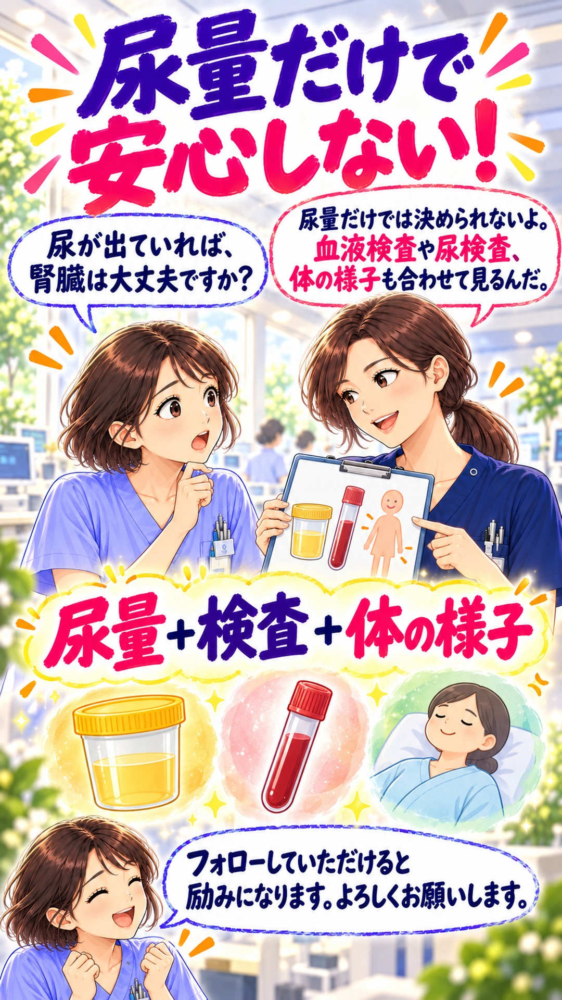

1. 腎臓は 体の調整係！
後輩：腎臓って、尿を作るだけですか？
先輩：老廃物を捨て、水分と電解質のバランスも整えるよ。
こす・取り戻す・尿へ移す。先輩と後輩の会話で、体の調整係をひとつずつ。
画面の真ん中を押すと、音声付き動画が再生します。
動画ファイルを開く| 働き | 移動の向き |
|---|---|
| ろ過 | 糸球体の血液 → 原尿 |
| 再吸収 | 尿細管の中 → 血液 |
| 分泌 | 血液 → 尿細管の中 |
フィルター・工房・荷物運び・水の調整係は、理解のための比喩です。イラストの形や配置は実際の解剖構造を示していません。移動の向きは上の表で確認してください。
ネフロンは、腎小体（糸球体とボウマン嚢）と尿細管からなる腎臓の機能単位です。各腎臓に約100万個あります。動画では、まず「糸球体と尿細管のセット」として紹介しています。原尿は糸球体でろ過され、ボウマン嚢に集まる尿のもとです。尿細管で必要な物質や水が再吸収され、余分な酸などが分泌されます。
抗利尿ホルモン（ADH、バソプレシン）は、主に集合管で水の再吸収を促し、尿を濃くする方向に働きます。腎臓で作られるホルモンではなく、視床下部で作られ、下垂体後葉から放出されます。
レニン・アンジオテンシン・アルドステロン系は血圧と体液量の調整に関わります。アンジオテンシンⅡには血管を収縮させる働きがあり、副腎皮質から分泌されるアルドステロンは腎臓でナトリウムの再吸収とカリウムの排泄を促します。塩分と水の保持も、血圧を支える働きにつながります。
尿が出ていても、腎機能が正常とは限りません。腎機能は、血液検査から推算する糸球体ろ過量（eGFR）、尿中アルブミンなどの尿検査、経過や体の状態を合わせて評価します。尿量だけで判断しないことが大切です。
制作時照合日：2026年10月1日（日本時間）。
後輩：腎臓って、尿を作るだけですか？
先輩：老廃物を捨て、水分と電解質のバランスも整えるよ。
後輩：ネフロンって、何のことですか？
先輩：糸球体と尿細管のセット。こすフィルターと、取り戻す通り道だよ。
後輩：血液が、そのまま尿になるんですか？
先輩：水や小さな物質がこされて原尿に。血球や大きなたんぱく質は、通常は残るよ。
後輩：原尿を、全部捨てちゃうんですか？
先輩：水やブドウ糖などを血液へ戻すよ。これが再吸収。原尿の大部分は戻るんだ。
後輩：分泌は、再吸収と何が違うんですか？
先輩：向きが逆だよ。血液から尿細管へ、余分な酸などを移すのが分泌なんだ。
後輩：抗利尿ホルモンって何ですか？
先輩：ADHとも呼ぶよ。集合管で水を血液へ戻し、尿を濃くするんだ。
後輩：腎臓は、血圧にも関わるんですか？
先輩：レニン・アンジオテンシン・アルドステロン系。塩分と水を保ち、血圧を支えるよ。

後輩：尿が出ていれば、腎臓は大丈夫ですか？
先輩：尿量だけでは決められないよ。血液検査や尿検査、体の様子も合わせて見るんだ。
後輩：フォローしていただけると励みになります。よろしくお願いします。